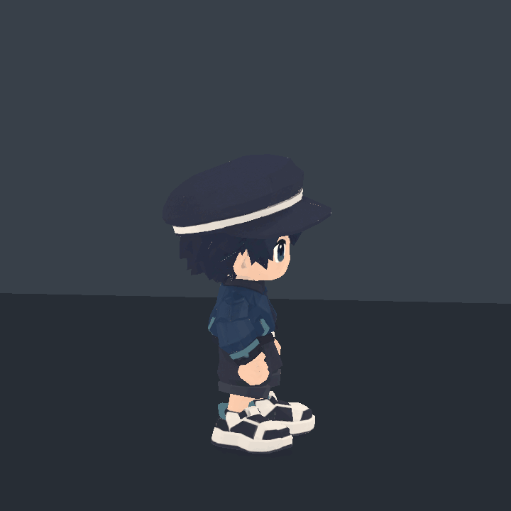
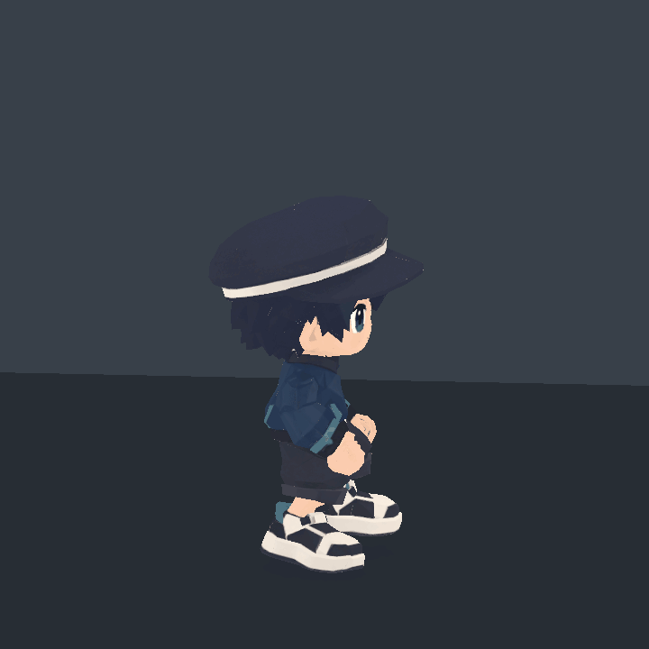

작고 명료한 동작과 짧은 준비·발력·회복을 중심으로 편집한 새 치비 캐릭터의 실제 Unity 렌더입니다.
고정 2.5D 측면 · 원본 720×720 · 30fps · 1× 재생. 기본 전신 카메라 기준: orthographic 1.05, target Y 0.78, offset (1.05, 2.00, -10.00). 원본 프레임의 순서와 재생시간을 유지합니다. GIF의 색상은 한 팔레트로 양자화되며 시간은 누적 30/40ms로 표현됩니다.
게임 플레이어·입력·공격 판정·Animator Controller에는 연결하지 않은 개별 클립 검수입니다. VFX는 이번 결과에 포함하지 않습니다. 유한 행동 GIF의 재시작과 묶음 안의 독립 반복은 게임 상태 전환을 의미하지 않습니다.
맨손·검·지팡이의 고정 메시 프리팹 3개와 무기 모델은 보존했습니다. 현재 제공하는 모션은 기본 10개와 점프 단계 5개이며, 공격 클립과 무기 공격 확대 프리뷰는 제외했습니다. 실제 게임의 구매·장착 로직에는 연결하지 않았습니다.
기본 유한 행동은 동작 종료 후 캐릭터의 끝 자세를 8프레임(약 .267초) 유지한 실제 Unity 캡처를 포함합니다. 행동 구간의 재생은 1배속이며, 클립 길이와 정지 포함 캡처 길이를 각 카드에 따로 표시합니다. 보조 클립과 전환에는 이 추가 정지를 적용하지 않습니다.
Jump_Full은 점프 전체를 보여주는 샘플로 Hips의 수직 궤적을 포함합니다. 분리된 Jump 보조 클립5개는 해당 공중 높이를 제거한 포즈 단계입니다. 게임의 Rigidbody/캐릭터 이동으로 높이를 제어할 때는 이 구분을 지켜 수직 이동을 중복 적용하지 않아야 합니다. 전환 GIF도 저장 클립을 샘플링·혼합한 검수이며 물리·충돌·입력 응답을 시험한 결과는 아닙니다.
Idle_Fists
Upright closed-fist neutral; quiet breathing and a small, continuous weight shift.
clip 2.800s · capture 5.600s · loop · 168 source frames
12포즈 · 연속 QA 1 · 연속 QA 2 · 연속 QA 3 · 연속 QA 4 · 연속 QA 5 · Unity 클립
Walk_Fists
Compact in-place walk retargeted from the selected AI gait; preserve support/swing timing and closed fists.
clip 0.867s · capture 1.733s · loop · 52 source frames

12포즈 · 연속 QA 1 · 연속 QA 2 · Unity 클립
Run_Fists
Short quick running steps from the selected AI cycle; restrained arm travel and a forward gaze.
clip 0.633s · capture 1.267s · loop · 38 source frames

12포즈 · 연속 QA 1 · 연속 QA 2 · Unity 클립
Jump_Full
Small preparation, compact airborne tuck, readable apex and absorbed landing. Hips contain the preview vertical trajectory; takeoff .16s, apex .44-.52s, landing .78s.
clip 1.200s · capture 1.467s · finite · 44 source frames · character endpoint hold 0.267s

12포즈 · 연속 QA 1 · 연속 QA 2 · Unity 클립
Dash_Forward
Short in-place dash pose: slight anticipation, compact forward drive, brief readable hold and one controlled recovery. No gameplay displacement.
clip 0.667s · capture 0.933s · finite · 28 source frames · character endpoint hold 0.267s

12포즈 · 연속 QA 1 · Unity 클립
Potion_Drink
Lift a small potion, keep its actual nozzle at the mouth during the sip, lower and return upright with closed fists.
clip 2.000s · capture 2.267s · finite · 68 source frames · character endpoint hold 0.267s

12포즈 · 연속 QA 1 · 연속 QA 2 · Unity 클립
Item_Throw_Overhand
Compact shoulder-led overhand throw beside the large head; fast release, forward gaze, restrained follow-through and recovery.
clip 1.300s · capture 1.567s · finite · 47 source frames · character endpoint hold 0.267s

12포즈 · 연속 QA 1 · 연속 QA 2 · Unity 클립
Hit_Reaction
Short sharp recoil and small compression, one damped settle, then upright recovery; no prolonged folded stomach pose.
clip 0.667s · capture 0.933s · finite · 28 source frames · character endpoint hold 0.267s
12포즈 · 연속 QA 1 · Unity 클립
Interact_Reach
Small deliberate chest-height button press with a readable contact pause, soft hand withdrawal and closed-fist ready.
clip 0.933s · capture 1.200s · finite · 36 source frames · character endpoint hold 0.267s

12포즈 · 연속 QA 1 · Unity 클립
Pickup_Low
Deep short-legged squat and downward hand reach to ground level in front of the shoes, grasp, lift and stand upright.
clip 1.333s · capture 1.600s · finite · 48 source frames · character endpoint hold 0.267s

12포즈 · 연속 QA 1 · 연속 QA 2 · Unity 클립
수직 이동을 별도 제어할 담당자를 위한 단계별 자산입니다. 동일 자세를 유지하는 루프에는 의도적으로 중복 프레임이 있을 수 있습니다.
Jump_Takeoff
Physics-ready pose phase derived from Jump_Full. Baked aerial height removed; runtime movement remains external.
clip 0.167s · capture 0.167s · finite · 5 source frames
12포즈 · 연속 QA 1 · Unity 클립
Jump_Rise_Loop
Physics-ready pose phase derived from Jump_Full. Baked aerial height removed; runtime movement remains external.
clip 0.300s · capture 0.600s · loop · 18 source frames

12포즈 · 연속 QA 1 · Unity 클립
Jump_Apex_Loop
Physics-ready pose phase derived from Jump_Full. Baked aerial height removed; runtime movement remains external.
clip 0.200s · capture 0.400s · loop · 12 source frames

12포즈 · 연속 QA 1 · Unity 클립
Jump_Fall_Loop
Physics-ready pose phase derived from Jump_Full. Baked aerial height removed; runtime movement remains external.
clip 0.300s · capture 0.600s · loop · 18 source frames

12포즈 · 연속 QA 1 · Unity 클립
Jump_Land
Physics-ready pose phase derived from Jump_Full. Baked aerial height removed; runtime movement remains external.
clip 0.433s · capture 0.433s · finite · 13 source frames

12포즈 · 연속 QA 1 · Unity 클립
별도 검수 장면에서 실제 저장한 클립을 혼합한 결과입니다. 지상 Move_Dash_Recover에는 포즈 혼합 후 실제 스킨 발바닥의 지면 접촉을 오프라인에서 보정하는 단계가 추가됩니다. 이 보정은 프리뷰 전용이며 게임 Controller나 런타임에 연결하지 않았습니다. 모든 인게임 전환 상황의 통과를 의미하지 않습니다.